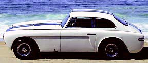
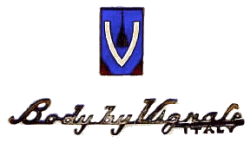
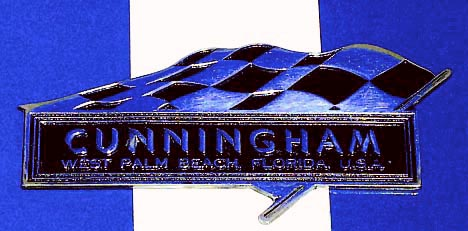
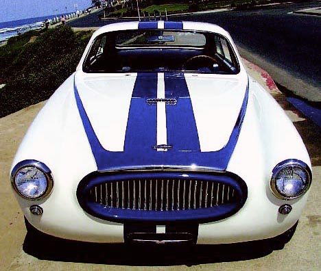
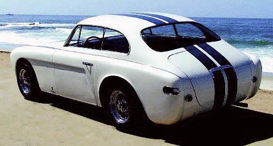
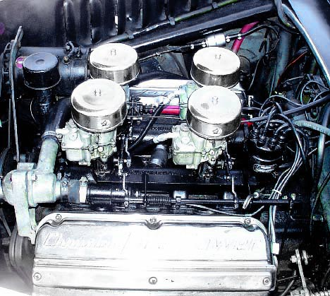
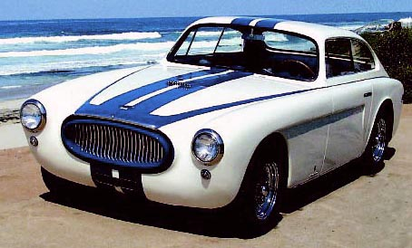
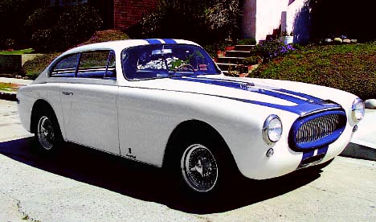
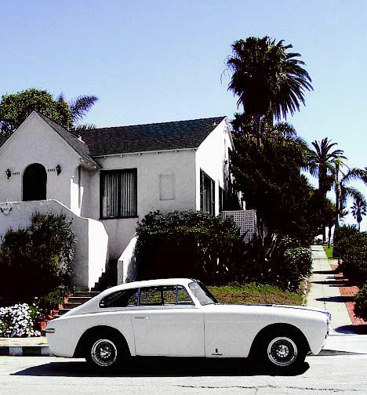

Carrozzeria Vignale · Cunningham
1953 Cunningham C-3 Vignale Competition Continental Coupe
Chassis No. C53-8-1086


Excerpt from the Great Book of Sports Cars:
Hollywood could make a movie about Briggs Swift Cunningham, and should. The son of a Cincinnati banker and godson of the Proctor half of Proctor & Gamble, he cut a dashing figure in high society. He knew all the “right” people (many as rich as himself) and had a passion for sports: golfing, flying, yachting especially—and sports cars. After joining the infant Sports Car Club of America in the early postwar years, Briggs drove to second at Watkins Glen in 1948 in his unique “Bumerc,” a rebuilt Mercedes SSK with Buick power.
Then Briggs got serious. Having met Phil Walters and Bill Frick at the Glen, he acquired their services as driver/engineers by buying their small company, hoping to enter their hybrid “Fordillac” in the 1950 running of the Le Mans 24 Hours, the world’s premier endurance race. But the Fordillac didn’t qualify, so Briggs fielded two cars powered by Cadillac’s new OHV V-8. One was a big special-bodied streamliner (nicknamed Le Monstre by appreciative French racegoers). The other was a stock 1950 Coupe de Ville. Against all odds, the latter finished 10th overall while the special finished 11th.
Buoyed by this success, Briggs turned to crafting his own sports-racing cars, setting up a company in West Palm Beach, Florida that same year. “We don’t intend to build two types of car, one for racing and the other for touring,” he said. “Our policy is to concentrate on one model readily adaptable for both purposes.” Before it was all over in 1955, he’d develop several.
The first, logically tagged C-1, was a smooth, low-slung roadster that looked like a cross between the early Ferrari Barchettas and some of the later Ghia-bodied Chrysler specials. Power was supplied by Chrysler’s 331-cubic-inch hemi-head V-8, mounted in a strong tubular-steel chassis with independent coil-spring front suspension, de Dion rear end, generous 105-inch wheelbase, and broad 58-inch front and rear tracks. Only one C-1 was completed, equipped for road use, rather lavishly so by European standards.




Next came the evolutionary C-2. Only three were built, all racers designated C-2R. Walters and Fitch drove one at Le Mans in 1951, but had to settle for 18th overall. Late that year, Briggs decided to make the C-2 more of a road car and sell it in limited numbers. The resulting C-3 would be offered as a coupe in addition to the usual roadster at respective base prices of $9,000 and $8,000. Also planned was a $2,915 racing package comprising four-carburetor manifold, ported and polished heads, oil cooler, competition brakes, and racing bumperettes and grille screen. But by the time a prototype coupe was finished, someone had figured out that each C-3 would cost $15,000 just to build.
That was no way to run things so in early 1952, Cunningham contracted with Alfredo Vignale’s Carrozzeria Vignale Coachworks in Turin, Italy to build C-3 bodies to a new design by Giovanni Michelotti. With this, the projected base price was dropped back to $9,000. What emerged was an American Gran Turismo as elegant and exciting as anything from Europe.
The C-3’s ladder-type tube chassis (with modified Ford front suspension) was almost identical with the C-2’s, but the De Dion rear end gave way to a far simpler and more reliable coil-sprung Chrysler live axle located by parallel trailing arms. Brakes were a combination of 11-inch-diameter Mercury drums and Delco actuating mechanisms. Wheelbase remained at 105 inches initially, but was later stretched two inches for more proper 2+2 seating. The V-8 used was basically as supplied by Chrysler Industrial except for Cunningham’s own log-type manifolds with four Zenith downdraft carburetors. With the semi-automatic Chrysler transmission and a 235bhp hemi-engine, the C-3 Continental Competition Coupes were good for sub-seven-second, 0–60mph runs. They were also capable of reaching and cruising along at 120mph, making them a formidable endurance racer!
Inside and out, the C-3 bore more than a passing resemblance to other Michelotti Vignale designs of the period, particularly some of the early Ferraris 212 and 225 Sport racing models currently under production. The bodywork was distinctively Vignale though, and one of the coachbuilder’s better efforts. Pleated-leather seats graced the cockpit, while the dash was dominated by a large speedometer and matching combination gauge with clock. A small tachometer was mounted between and slightly above the main dials. Luggage had to be carried inside, because the spare tire and fuel tank occupied most of the normal trunk space.
The first C-3 coupe, named Continental, was finished in time for the Cunningham team to drive to the Glen in September 1952. It then toured U.S. auto shows while a second car was displayed at the Paris Salon that October.
“Production” got underway by early 1953. Unfortunately, while the Palm Beach works could build a chassis a week, Vignale needed almost two months to complete the rest of the car. A planned cabriolet derivative was shown at Geneva in March while assembly continued at this snail’s pace. Ultimately, just nine cabriolets and 18 Competition Coupes would be built, the former carrying a delivered price of exactly $11,422.50. It was as close as Briggs ever got to a production model.
Of course, the real reason for all this was to give Cunningham a contender in production-class racing, though the C-3 was never produced in numbers enough to make it much of a threat. Briggs’ remaining competition efforts would be made with further variations on his original theme: the C-4R and C-4RK, C-5R, and C-6R.
Nevertheless, the C-3 was svelte and compact next to most contemporary American cars, and it was a styling tour de force. Arthur Drexler, then director of New York’s Museum of Modern Art, put the coupe on his list of the world’s 10 best designs. For a discerning, monied few, the C-3 was a terrific buy, and it sold as quickly as the Cunningham company could build it.
The C-3 was regarded as every bit as good as a contemporary Ferrari—maybe better in some respects. And while the Chrysler hemi was likely the best engine of its day, few were willing to spend nearly $12,000 for a car in the early Fifties. A pity. They missed a very good car!
This car’s history
Chassis No. C53-8-1086 was ordered new by Doctor Floyd W. McRae, based in Atlanta, Georgia. Dr. McRae ordered his Competition Coupe directly from Briggs Swift Cunningham in the Spring of 1953 and paid approximately $11,000 U.S. dollars to be one of the first owners of the newly released production Cunninghams. Chassis C53-8-1086 was the fourth production C-3. Two prototypes were produced in the Fall of 1952. An additional three production versions were finished before Dr. McRae took delivery of his blue and white coupe.
Dr. McRae registered the car on Fulton County, Georgia plates “033 696”. On January 10, 1964, Dr. McRae re-registered the car again in Fulton County, Georgia. The new license plates were “2943”. It is not known what races, if any, Dr. McRae ran his Competition Coupe in. It has been rumored that the car had a sole class win at the SCCA, Sowega, Georgia races in 1954. However, this has never been confirmed.
On July 1, 1970, Dr. McRae sold the car to Bill Harrah of Reno, Nevada for $3,000 U.S. dollars. The total mileage at the time of the sale was 21,188.
The car was later sold to Doctor Fredrick A. Simione of Philadelphia, Pennsylvania. Doctor Simione sold the car in April of 1994 to Mr. Horace Jeffrey of Orange, California as part exchange in his purchase of Mr. Jeffrey’s 1954 Ferrari 375 Mille Miglia Pinin Farina Competition Spyder, s/n 0412 AM.
In 1997, Doctor Simeone repurchased the car from Jeffrey for $183,000 U.S. dollars and in March of 1998 the car was traded to Symbolic Motor Car Company.
This beautiful Italian-American hybrid is one of just 16 production examples completed. The car has been thoroughly race prepared and is eligible for numerous Historic Touring and racing events throughout the world.



For more information on this and other classic automobiles, please contact Symbolic Motors in La Jolla, California.